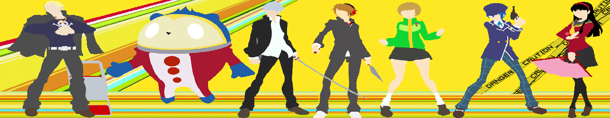
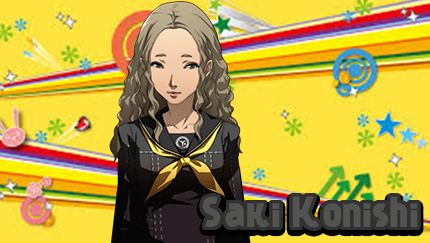
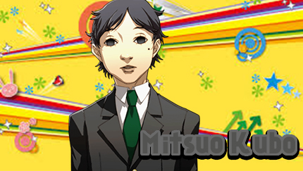
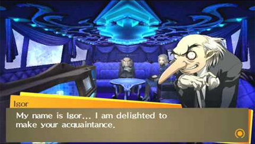
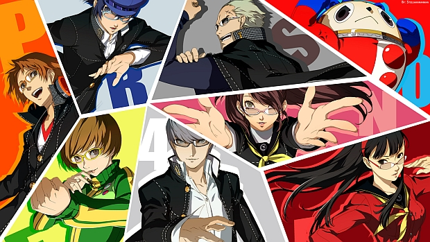
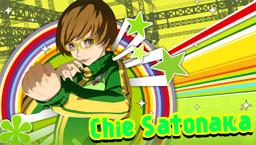
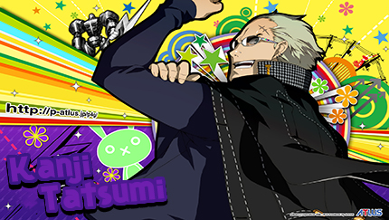
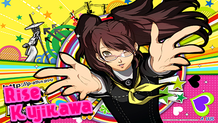
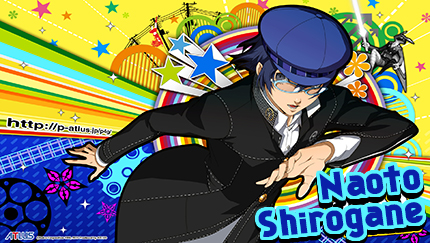
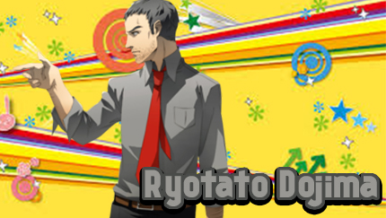

Persona 4 \\ Persona 4 Golden
What's The Difference Between The Two?
Persona 4 Golden, also known as Person 4: The Golden in Japan, is an enhanced port of PlayStation 2 's Persona 4 for the PlayStation Vita . The game is compatible with the console version of the Vita, the PlayStation TV. The game includes a multitude of new features compared to the PS2 version, such as new environments, new voice dialogue, etc.
The Most Notable Diferences Are:
- Some environments have either been improved or replaced with new ones
- Rise can now assist the party with All Out Attacks, making them stronger (as shown below)
- If the player fulfills criteria for at least the good ending, daily activities are expanded to February 14, giving more time for events and social links.
- The player can now explore Inaba in the evening, when Dojima is not home.
- New events, such as a Halloween event and a skiing trip.
- Chie is now voiced by Erin Fitzgerald, instead of Tracey Rooney
- Teddie is now voiced by Sam Riegel, instead of Dave Wittenberg
- A new character, Marie, is now present in the game with her own S.Link
- And much more!
Rise Kujikawa assisting the Investigation Team with an All Out Attack
What is Persona 4 and Persona 4 Golden?
Set in 2011, the game starts with the protagonist (who is named by the player) being sent to the rural town of Inaba from the big city, since his parents are working abroad. He is living with his uncle Ryotaro Dojima and his younger cousin Nanako Dojima, and attends Yasogami High School, where he becomes friends with Chie Satonaka, Yukiko Amagi and Yosuke Hanamura. His uncle Dojima is a police detective, whose primary assistant is a man named Tohru Adachi.
On his first day arriving in town, the protagonist has a strange dream that teaches him to use Persona, specifically his first one Izanagi , in battle. Through Chie Satonaka, the protagonist and Yosuke come to realize that an urban legend called the Midnight Channel is true; If you stare into a turned off TV at midnight on a rainy day, you will see a strange figure in there. Shocking the eleven sleepy town, a TV announcer, Mayumi Yamano, is found dead, hanging upside down from a telephone pole. When the protagonist first watches the Midnight Channel after hearing the rumor from Chie, he finds that he has the power to physically go into the TV, but his TV is too small to support him.
When the protagonist reports to his friends the next day, they decide to test his theory about him being able to enter the television. When they realize that what the protagonist has told them is in fact true, they eventually come to learn that the Midnight Channel is in fact related to the recent murders in the rural town. The pattern they find is that people who become the talk of the town via being shown on the media begins to appear on the Midnight Chanel, thus resulting in their being kidnapped. If they are not rescued before a mysterious fog sets in, its game over.
Main Story Events
Mayumi Yamano's Death

The protagonist is introduced to Mayumi Yamano when her alleged affair with Namatame was broadcast by the media. People cared more about the novelty of their affair being brought to light than the reasons that lead to it in the first place, focusing on the sensationalism and not on the actual people involved. This affair led to a chain of events, including the end of Namatame's career, and his marriage Misuzu Hiiragi broken off. People's opinion on Mayumi significantly deteriorated to the point where she retreated to Yasoinaba to avoid further media attention. She chose to stay at the Amagi Inn run by Yukiko Amagi's family.
When the protagonist, Yosuke, and Chie accidentally arrived in the Midnight Channel, they stumbled upon a mysterious room where there were posters of Misuzu Hiiragi, either with the faces cut out or splattered with blood, upon the walls, and a noose hanging in the middle made with rope and a scarf belonging to Mayumi. A foreboding feeling lingered within the area, forcing the trio to leave. This area is undoubtedly where Mayumi had died.
Saki Konishi's Death
The protagonist meets her as she takes a break from her part-time job working in Junes. She informs the protagonist that Yosuke's father is the manager of Junes and that she is Yosuke's co-worker. She sees Yosuke as a nosy little brother and calls him "Hana-chan" as a way of playfully teasing him. Yosuke harbors romantic feelings towards Saki, but fails to confess to her and this love is unrequited as a result. Saki is later revealed to be the person who first found Mayumi Yamano's body, making her nervous and scared.
Later, when the protagonist, Chie Satonaka, and Yosuke watch the Midnight Channel, the trio observes a blurring image of a female student resembling Saki Konishi, who appears to be writhing in pain. The next day, the Yasogami High students are tragically informed that Saki Konishi was found murdered. Her corpse was hung upside-down on an antenna. Devastated by her death, Yosuke requests the protagonist take him into the Midnight Channel, as the protagonist is the only one capable of entering the TV.
- Voice of Jessica Straus
Yukiko's Kidnapping
Yukiko Amagi is the third victim in the serial kidnapping/murder case in Inaba (-as quoted by Yosuke Hanamura). When Yukiko is kidnapped, the Investigation Team (consisting of Yu, Yosuke and Chie at this point) will quickley discover that their theory that the kidnapped victims are thrown into the tv world is true. This event is when the game becomes free roam, and it also is frequently used as reference for their theory about who the true culprit really is.
Mitsuo Kubo's Copycat Murder
Mitsuo is a teenager who suffers from psychological issues. He has poor self-esteem due to ridicule for his appearance, and in turn his social isolation and lack of friends. This makes him self-centered, delusional, attention-dependent and aggressive. Mitsuo is immature, and often throws tantrums if something upsets him, such as tripping over a garbage bag or being rejected by Yukiko. If anyone tries to confront him about his life's emptiness, having no friends or accomplishments, he lashes out into a state of anger and ignorance. Although he is so often alone and looked down upon, Mitsuo has an extreme need for attention, whether it be positive or negative.
Mitsuo does not display any notable skills, interests or good attributes other than his love for video games and the internet because of how empty his life is. As stated by his shadow, he has and is nothing, and this is why he is so resolute in neglecting his shadow. Mitsuo's lack of attributes is one of the reasons he doubts his existence and secretly wishes to die as referenced by his shadow. He simply wants to end it all, and the only reason he's obsessed with killing is because he thinks it's the only way he can make an impact on the world. Most notably, Mitsuo's extreme negative behavior and hostility initially made it hard for the Investigation Team to discern the difference between Mitsuo and his Shadow when they confronted him at the end of his dungeon.
- Voice of Kyle Hebert
Velvet Room Intro Scene
The Velvet Room is a recurring feature in every Persona game to date. It often manifests itself differently in each game, but it is always covered in blue velvet and hosted by Igor. The purpose of the Velvet Room is always to manage Personas and use them in Fusion. The room is invisible to all except those with high spiritual sensitivity. In Persona 3, Igor states that only those who have formed a contract can be guests.
At the very beginning of the game, the player will see a cutscene in which you are welcomed by Igor. This room is heavily bound to your fate in game, so nothing here happens without a reason. Many key story events are foreshadowed here, but not directly stated. In Persona 4, The Velvet Room appears as the interior of a limousine. Igor is still present and he has a new assistant named Margaret. It seems that the "limousine" is cruising along an unknown path through a dense fog, mirroring the situation over at the protagonist's own world. In Golden, the Velvet Room's purpose and appearance is much the same as the original Persona 4, except it adds a new character Marie, who manages skill cards and allows the player to give cards to her to store and later repurchase. In addition, this is the location where the Aeon Social Link is able to be formed with Marie, and the location that she can be found to engage in her social link.
Igor
In every Persona game to date, Igor has played the role of Proprietor of the Velvet Room, a space which transcends both dream and reality. As the proprietor, Igor provides insight to the protagonist regarding their powers, emotional bonds, and possible dangers that await them in their journey. Igor also provides the vital services of Persona fusion, which allows the creation of vastly more powerful Personas from preexisting ones; and the use of the Persona Compendium, which allows previously created and/or acquired Personas to be recalled at a later time. Despite his rather striking appearance, Igor bears a calm and courteous demeanor while speaking with the protagonist. Though the well-being of the protagonist is important to him, he reserves the disclosure of certain information for more "timely" points in the story. During conversations concerning the protagonist's actions, Igor opts for rather cryptic comments that tend to foreshadow coming events and possibly the outcome of the story as a whole, regardless of whether or not those comments are at the time understood (which may be his intent). This suggests that Igor may have near-omniscience, though by his own admission, there are things that even he can't foresee.
Margaret

Margaret has platinum-blonde hair, pale skin and golden eyes — traits shared with her siblings. She is said to be unbelievably beautiful, and Rise even expresses envy of her beauty when the Investigation Team encounters her. Like her siblings, she is dressed entirely in dark blue with matching high heel shoes and uses black and golden accessories.
Margaret is a professional and quiet individual, and significantly more mature than her younger siblings Elizabeth, Theodore and possibly Lavenza, although she shares Elizabeth's sense of humor. However, she does show an angry side to her in Persona Q when Theodore accidentally gets her hair wet. She is highly concerned about the relationship Elizabeth established with the protagonist of Persona 3, as she decided to leave the Velvet Room in order to find a way to rescue him from his fate. This also makes it clear that Margaret is highly loyal to her master Igor.
Marie
When Marie is first met, she seems to be a very cold and antisocial individual. She is sullen, cranky, sarcastic, irritable, very foul-mouthed and often prone to mood swings. She will not hesitate to voice out her opinion or express her thoughts, regardless of how it would make everyone feel. The team is also weirded out when she politely apologizes, commenting that she never seemed like the type who would say sorry.
However, as the protagonist proceeds in her Social Link, it becomes apparent that her "lack of emotion" is basically just her way to deal with her own shyness, insecurity and naïveté. Without memories, Marie is unaware of many aspects of the world and modern conveniences, such as not knowing what an electric outlet is (calling it an eclectic loutwit). She has an innocent side as well. This is also why she wants the protagonist to show her Inaba: She wants to learn about the world and who she really is. Maxing out her Social Link will unlock a huge story point, so it is highly recommended.

Main Characters \\ The Investigation Team
The Investigation Team is a group formed by the main party members in order to investigate the phenomena of the Midnight Channel and to stop the murder cases in Yasoinaba. They work independently from the police because they feel the police are inept, and revealing the Midnight Channel to the police could make them no longer being able to enter the TV at Junes, potentially never catching the serial killer. This is especially crucial in the case of Yu Narukami, as his uncle, Ryotaro Dojima, is one of the head detectives in the case, and having him put under police radar could spell out them falsely getting arrested.
The founding members of the Investigation Team are Yu Narukami, Yosuke Hanamura and Chie Satonaka, three students of Yasogami High School who've awakened their Personas. After the death of Saki Konishi, a third year at Yasogami High, is mysteriously killed, the trio decide to investigate a possible link between the TV world and the murders.
Protagonist \\ Yu Narukami
In Persona 4, he is a silent protagonist except for instances where he audibly speaks when summoning a Persona and so on. His personality is ultimately based on the player's actions and decisions. However, when he hears Jika Net Tanaka, he describes it as a "cheery song" unlike the protagonist of Persona 3, who describes it as an "annoying song," which may indicate some semblance of a personality. Also, in Persona 4 Golden, the Investigation Team members comment how he doesn't talk much when equipped with the Butler Suit. His dialogue choices make him seem very neutral, as opposed to the protagonists of Persona 3, and includes some limited sense of humor along with occasional flirtatious or silly behavior.
Overall, he is portrayed through his dialogue options as having a more extrovert personality than the Persona 3 protagonist. He seems to have a strong moral compass as there are several dialogue options that call out someone doing wrong or being mean. In one case, when asked to stay and help clean the basketball court, the options being either to stay, or to "be an ass and leave," indicating an inclination to the former protagonist of persona 3. While the game portrays the protagonist as a calm and neutral individual, one scenes shows him to be also aggressive as well. In the events regarding the decision to kill Namatame, if the player made all the correct choices, the dialogue choice "Calm the hell down!" will be shown. This shows that, while the protagonist is calm and decisive, he has limits as to how much tolerance he has. In addition, he hardly ever shows this, as shown when the Investigation Team was surprised by his outburst at Yosuke.
-Voice of Johnny Yong Bosch
Yosuke Hanamura
Yosuke is a clumsy transfer-student who arrived six months before the protagonist. He is often the target for jokes about his lack of muscles and body strength, and fights with blunt, double-handed objects such as wrenches, but moreso knives and kunai. The protagonist first sees him crashing his bike into a garbage can, the first of many times, but he doesn't introduce himself to the protagonist until he helps Yosuke by getting him out of a garbage can. He cares deeply about Saki Konishi and fell into depression after her death. Much of his character development stems from his feelings for Saki, and dealing with the hurtful possibility that Saki probably never felt the same way about him that he did for her.
Yosuke doesn't usually think before he says something, which results in him sticking his foot in his mouth, and unintentionally insulting someone, including Kanji Tatsumi about his sexual orientation. He tends to be a bit of a wannabe ladies' man and has a fascination for girls, forcing the girls to enter a beauty pageant they can't back out of. But beneath most of that (more so in the original game), he shows great insight with decent deducing, and is often on task of the situation on hand, and can be very serious at times. He also tends to keep a good face in order to make sure the team is in their best spirits and he cares a lot about the protagonist, as well as having a strong sense of justice.
-Voice of Yuri Lowenthal
Chie Satonaka
Chie is energetic and outgoing, the "extrovert" compared to Yukiko being the "introvert." She has a bright and upbeat personality, often trying to cheer up the group by joking about the case. She can be somewhat short tempered, especially with Yosuke, and is slow to back down from a challenge. Chie practicing a kick outside Void Quest. Chie, in a way, could be considered a "tomboy." Like Lisa Silverman from the Persona 2 dualogy, she is obsessed with kung fu and is a huge fan of martial arts movies, most prominently Trial of the Dragon. She also has a poster of Bruce Lee in her room. Outside Naoto's dungeon, Chie mentions that as a kid, she had her own secret hideout near the mountain by Yukiko's house where she would pretend that a legendary kung fu master was teaching her special techniques. Chie's wish is to become a police officer some day. Her cooking skills are horrific and are prone to creating Mystery Food X since it tastes generally unpleasant.
Chie has strong sense of justice and a fierce desire to protect others. She is known to defend classmates, children, and strangers from being threatened and attacked by local delinquents. Even when outnumbered, she does not hesitate to intervene and speak out. Though reckless in putting herself into dangerous situations, she is willing to sacrifice herself for the sake of others; when a delinquent threatened her loved ones, Chie gave him the opportunity to hit her freely in exchange for leaving everyone else alone. Chie wants to protect Yukiko and the protagonist most of all, and they serve as strong motivators in her wanting to become stronger, constantly training her kung-fu moves and challenging herself physically. Though nominally fearless, Chie has some specific childish fears: she is terrified of ghost stories, thunder, and being in the dark.
-Voice of Tracey Rooney | Erin Fitzgerald (Persona 4 Golden Onwards)
Yukiko Amagi
Yukiko Amagi is a rich and elegant young woman who is popular with boys and girls alike. At first, Yukiko is very introverted, but she gets livelier after she is rescued from the Midnight Channel. Often scoring the best during exams, she is intelligent and often repeats the material with her best friend Chie Satonaka. Despite being intelligent, she is prone to brainfarts and having moments of clumsiness. According to Kanji Tatsumi in his P4A story mode, Yukiko is also open-minded and straightforward.
Yukiko is not only shown to be quite fearless and unflinching in the face of creepy atmospheres and surroundings, she also greatly enjoys horror stories, much to the dismay and chagrin of Chie, who is easily frightened upon the mention of such things. As a smart, attractive, feminine, respectful, polite and hard-working teenager, she has attracted many male characters in Inaba such as Mitsuo Kubo, but acts uncomfortably when someone mentions her beauty. She also truly appreciates and cares about her friends, as well as her parents and staff from the Inn, and often vows to become an even stronger, more dependable person so that one day she, in turn, will be able to support and protect them just like they have did to her in the past. She is also shown to take the well being of new friends she makes seriously, as in Persona 4 Arena when Yukiko solemnly promises to save Labrys from danger and protect her from harm just recently after bonding with her (albeit this was in her own story mode) and Persona Q where Yukiko assures Rei and Zen they'll be safe as long as she's around, going so far as to being a big sister figure to Rei when she bonds with her after Rei asks her if she can call Yukiko "Yuki-chan."
-Voice of Amanda Winn Lee
Kanji Tatsumi
From the start, he was known as a delinquent. When he was in middle school, he destroyed a biker gang and his notorious fame as a wild person spread to every corner of the countryside town. Although people mistake him as a member of a biker gang or as someone who likes violence, he actually does not have even the tiniest inclination to be violent. When he strongly denies the side of him which enjoys "feminine" hobbies like sewing or knitting is pushed to the extreme, it unexpectedly established his position as a juvenile delinquent. He drapes his school uniform over his shoulders in a punk-ish style to emphasize the atmosphere he wishes to embody. He acts out against any authority figure, but speaks politely to the protagonist and his other seniors. However, when he gets flustered and wants to threaten people effectively regardless of the circumstances, he occasionally gets into fights and scraps.
Despite his seemingly rough personality, it is often due to misunderstandings. For example, he once went after a rowdy biker gang, but only to stop them from disturbing his mother. He obeys his strict curfew or his mother will make a fuss. His father is deceased. Before Kanji's father died, he told Kanji, "If you're a man, you have to become strong." Kanji thought his father was telling him he wasn't a real man, which angered him and caused him to become insecure about his masculinity. As a result of this, Kanji drastically changed his appearance and began isolating himself from others. At the beginning of Persona 4, Kanji has no known friends. Compared to the rest of the team, Kanji tends to be a bit slow on the uptake. However, he is straightforward and decisive. Through the game he realizes that his impulsive actions can drag others down, and that he can balance that by instead giving them his support
-Voice of Troy Baker | Matt Mercer (Persona 4 Golden; New Lines)
Rise Kujikawa
Rise is cheerful, outspoken, naughty, cute, and is quite boastful about herself, although very sweet deep down. She is referred to as a "dangerous girl" by Chie Satonaka, due to her boldness in flirting with the protagonist, and her teasing of Yosuke Hanamura and Kanji Tatsumi. Rise is quickly annoyed by the smallest things, which ends up with her crying dramatically, and sometimes producing crocodile tears. She's rather childish and possessive; she once pouted and told the protagonist he mustn’t call another girl "cute." She has also shown her competitive side on many occasions, and she’s mocked Yukiko Amagi’s insecurity and her cooking. Along with Yukiko, and Naoto Shirogane, she cries when the protagonist leaves Inaba, and she’ll profess her love to him. This, combined with her Arcana being The Lovers, her flirting, and certain scenes in Persona 4 The Animation show her affection for the protagonist.
Rise states that she loves the protagonist, and will show a very obvious interest in him during the storyline regardless of her Social Link standing. Rise used to be an idol, but she quit to work at her family business (citing health reasons), after Kanji is rescued. She is stressed out, and tired of show business because she doesn't know if the Rise that everyone admires is the 'real' Rise, or the persona of Risette that she presents to the masses. Rise's biggest insecurity is her individuality. She fears that she has no true self and that her career is making her lose it due to constantly putting up fake faces to the general public. While she initially attempts to change this by running away she is left feeling unsatisfied. By the end of the series, she acknowledges all of those fake selves she presented to others were actually just other sides of her true personality. Upon realizing this she decides to start up her career content that she will be portraying her true self for all to see.
-Voice of Laura Bailey | Ashley Burch (Persona 4: Dancing All Night)
Naoto Shirogane
Having lost both her parents in a car accident when she was very young, Naoto is an orphan who acts very mature in spite of her age. As a descendant of a respected lineage of famous detectives, she wears formal clothing, and deepens her voice when she speaks in a sophisticated, stilted manner. She is generally very serious, focused and mission-oriented. She rarely jokes around which can make her seem like a killjoy or party pooper when the team is involved in silly antics. In Persona 4 Arena, Kanji calls her out on this, saying she is too "uptight" and it makes her seem distant and on a different wavelength. One of Naoto's insecurities is her lack of friends; she has difficulty making friends and is lonely as a result. Naoto is very intelligent and analytical. A running gag, however, is that she texts in all caps with abbreviations, for example, "SEE U TOMORROW? Y/N PLZ REPLY ASAP" and "I HAVE IMPORTANT INFORMATION 4 U, PLZ SEE ME TOMORROW AFTER SCHOOL".
Naoto's insecurities are her gender and age. She yearns to be seen as an adult, and expresses frustration at being treated like a child by the police force. She hates being looked down upon, and fears no one will take her seriously as a female, in a sexist occupation field. The sexism Naoto has tolerated and endured had made her self-conscious and ashamed of being female, making her struggle with the concept of femininity. In response, Naoto desired to be male; Naoto wanted to be viewed as male by society, adopted a male identity, never corrected anyone when people used male pronouns, avoided feminine clothing and wears platform shoes to appear taller. It is also implied Naoto began binding her chest to hide her large-sized breasts. After dealing with her Shadow, Naoto decides to give being female another try. However, Naoto still has difficulty accepting being female in her Social Link. By the end of the game, due to her own will and with the protagonist help, she accepts the fact she does not always need to change who she is to suit the world. In the epilogue of Persona 4 Golden, she has started dressing more freely, disguising her femininity less than before. She is comfortable with not only who she is, but also that everyone else is aware that she is female.
-Voice of [Voice Uncredited] | Mary Elizabeth McGlynn (Persona 4: The Animation) | Valerie Arem (Persona 4: Arena: Ultimax)
Teddie \\ Kuma
He serves as the guide for the Investigation Team in the Midnight Channel. At first, he acts as support for battles, but after the player completes the Marukyu Striptease dungeon, he becomes a playable character while Rise Kujikawa takes over the support role. Whenever a new team member joins, Teddie is inexplicably able to create glasses so that they can see through the fog in the Midnight Channel.
Teddie was first seen in the Midnight Channel at the time when the protagonist, Yosuke Hanamura and Chie Satonaka search for an exit, after leaving the Ominous Bedroom. Teddie, confused and irritated by their presence, asks them to leave because it's dangerous there and shows them the exit. After Saki Konishi's death, the protagonist and Yosuke enter the TV again in order to investigate. There, they meet Teddie once again, but he gets suspicious and thinks that they are the ones who throw people in. After they try to prove their innocence, Teddie asks them to find the real culprit and make them promise it in order to let them out. When the protagonist first awakens to his Persona, Teddie, amazed by his power, immediately calls him 'Sensei.' Teddie assumes the support role for the team until Rise Kujikawa joins the party.
After Teddie defeats Rise's shadow, his own Shadow appears as a larger form of his bear costume coming out of a hole in the ground. Unlike most of the other Shadow-selves, Teddie's shadow is highly intelligent, speaks in a deep and intimidating voice and does not wait for Teddie to deny him before attacking the party, mocking the Investigation Team's goals of seeking the truth as a waste of effort. However, this may be due to the intervention of another party, as Rise Kujikawa stated she felt the intervention of a powerful presence, most likely Izanami or Ameno-Sagiri. It is believed to represent Teddie's hiding the truth about his identity - that is, the fact that he is a lost, lonely Shadow. He learned to speak human language and became friendly with humans, taking his bear-like form so that people would like him upon meeting him. Teddie eventually takes a human form so that he can be with other humans. After gaining a personality and losing his Shadow mask, he receives his own Persona.
-Voice of Dave Wittenberg | Sam Riegel (Persona 4 Golden)
The Dojima Family
Living alone with his daughter, Ryotaro Dojima is shown to be a hard working detective, although he often becomes a workaholic. Adachi notes that he is a particularly harsh supervisor to him, but Dojima is a seasoned detective and takes his job seriously and is merely training Adachi for their line of work. While he loves his daughter, he has difficulty being a father to her, especially in wake of his wife's death, whom he states that Nanako resembles in both appearance and personality. His wife's death weighs on him heavily and he is obsessed with catching her killer, even at the expense of spending time with his daughter. According to the events of his Social Link, Dojima did not understand the true meaning of "family" until the protagonist arrived, further pointing out the familial problems of the Dojimas. Should the protagonist progress his Social Link as well as Nanako's, these familial problems can be amended and Dojima becomes more involved in Nanako's life.
Nanako is a mature and kind person for a girl her age, though has moments of childish innocence such as when she wonders if the weather reporter "decides" the weather. Her refreshingly honest way of thinking and speaking is noted by many characters in the series. She is selfless and tries her best not to hurt anyone's feelings, such as when she stomached all three of the omelets made by the Investigation Team girls and stated that they were all good, despite clearly having some distaste to them. She tends to be shy around strangers, but becomes friendly once she warms up to them. She is quite responsible and reliable, and has handled a lot of housework, such as cooking, doing the dishes and laundry in her home ever since her mother passed away. Dojima notes that she resembles her late mother not only in appearance, but also in personality.
Dojima: -Voice of J.B Blanc || Nanako: -Voice of Karen Strassman